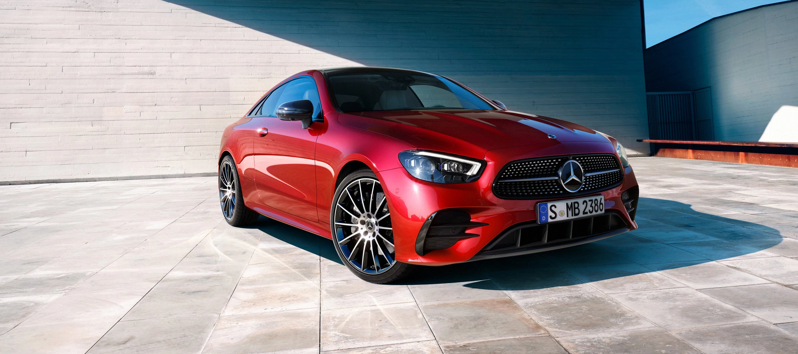

The EQE features a sporty design with many of the characteristic Mercedes-EQ design touches, including the one-bow line and cab-forward design first seen in the EQS.
The EQE350 will offer an output of 288bhp and 531Nm of torqueAs with many all-electric cars, the EQE gets short overhangs, while at the rear, the car gets a dynamic accent in the from of a sharp rear spoiler.
Wheels that are flush to the outer edge of the body combine with a muscular shoulder section to give the EQE an athletic character The EQE is 4,946mm long
with a wheelbase of 3,120mm (the latter being 90mm shorter than the wheelbase of the EQS but 80mm longer than that of the current E-Class).
The interior dimensions are also said to exceed those of the current generation E-Class, promising more shoulder room in the front, and overall interior length.
Boot capacity meanwhile, is 430 litres. The MBUX Hyperscreen, automatic comfort doors at the front, and rear-axle steering will be available as optional extras. The EQE also promises best-in-class isolation from noise and vibration in its cabin
A-CLASS SALOON
A Mercedes-AMG A-Class Saloon is a premium compact sedan manufactured by Mercedes-Benz.
It is a sporty and elegant car that combines the comfort of a luxury class with dynamic performance.
The car is available in different trims, including the Mercedes-AMG A-Class Saloon1. The AMG version of the A-Class Saloon is equipped with a powerful engine that delivers an output of 134 - 161 hp and can accelerate from 0 to 62 mph in 8.2 - 9.2 seconds.
The car has a top speed of 134 - 143 mph1. The fuel consumption of the car ranges from 44.8 - 57.7 mpg.
The A-Class Saloon is designed to provide a dynamic driving experience while maintaining a high level of comfort and luxury
C-CLASS SEDAN
The C 300 Sedan is equipped with a 2.0-liter inline-4 turbo engine that delivers an output of 255 hp and can accelerate from 0 to 60 mph in 5.7 seconds.
The car has a top speed of 130 mph. The fuel consumption of the car ranges from 22 - 25 mpg in the city and 31 - 35 mpg on the highway.
The AMG C 43 Sedan is equipped with a 3.0-liter V6 biturbo engine that delivers an output of 385 hp and can accelerate from 0 to 60 mph in 4.5 seconds
. The car has a top speed of 130 mph. The fuel consumption of the car ranges from 19 - 20 mpg in the city and 27 - 28 mpg on the highway
SUV
EQA
The Mercedes-Benz EQA is a fully electric SUV that combines luxury and sustainability1.
The car is equipped with a 16.9-15.4 kWh/100 km battery that provides a range of up to 265 miles on a single charge.
The car has a top speed of 99 mph and can accelerate from 0 to 62 mph in 8.9 seconds1. The exterior of the car features harmonized proportions, short overhangs, and a powerful vehicle shoulder with coupe-like side lines
seafsdfSFWES safasdfasdf sfasfas
EQE SUV
The EQE SUV is an electric vehicle manufactured by Mercedes-Benz.
As of my last update, which was in early 2022, the EQE SUV hadn't been released yet, but it was expected to be part of Mercedes' EQ lineup, focusing on electric vehicles.
It's likely to be a midsize SUV, following the design and technological traits of other models in the EQ range, with a strong emphasis on electric drivetrain technology, performance, and sustainable design.
GLC SUV
The Mercedes-Benz GLC is a popular luxury compact SUV in the Mercedes lineup.
It's known for its combination of style, comfort, and performance. As of my last update, the GLC is available in both SUV and Coupe body styles, offering a range of engine options including petrol, diesel, and plug-in hybrid variants.
Features typically include:
Interior Comfort: The GLC boasts a well-crafted interior with high-quality materials and advanced technology. It offers a spacious cabin with comfortable seating and a range of luxury amenities.
It incorporates the latest Mercedes-Benz technology, including a user-friendly infotainment system with a central touchscreen, smartphone integration, navigation, and various driver-assistance features.
Performance: The GLC offers a balance between power and efficiency, with available engine options providing strong performance. It typically has responsive handling and a smooth ride quality.
Safety: Mercedes-Benz places a strong emphasis on safety, and the GLC usually comes equipped with a suite of safety features and driver-assistance systems to enhance both active and passive safety.
HATCHBACK
A-CLASS HATCHBACK
The Mercedes-Benz A-Class hatchback is a compact car that represents the entry point into the Mercedes-Benz lineup. Known for its blend of luxury, technology, and sporty appeal.
the A-Class offers a premium driving experience in a smaller package. Here's a detailed look at its key aspects:
Design:
Exterior: The A-Class hatchback boasts a modern and dynamic design. Its compact dimensions give it a sporty and agile appearance, making it well-suited for urban environments.
Interior: Inside, the A-Class often features a sophisticated and high-quality cabin. Premium materials, modern styling, and attention to detail contribute to a luxurious feel. The interior space is well-utilized, offering comfort and functionality.
Technology:
MBUX Infotainment System: The highlight of the A-Class is the MBUX (Mercedes-Benz User Experience) system, a highly advanced infotainment setup. It includes touchscreen displays, voice commands (activated by saying "Hey Mercedes"), navigation, smartphone integration, and a range of connected services.
Advanced Safety Features: Mercedes equips the A-Class with a suite of safety and driver-assistance features, which might include adaptive cruise control, lane-keeping assist, automatic emergency braking, parking assistance, and more.
Performance:
Engine Options: The A-Class typically offers a variety of engine choices, including petrol, diesel, and occasionally hybrid powertrains. These engines are designed to deliver a balance of performance, efficiency, and responsiveness.
Handling: Known for its nimble handling and agility. the A-Class provides a dynamic driving experience suitable for both city streets and open roads.
B-CLASS HATCHBACK
The Mercedes-Benz B-Class hatchback is a compact MPV (Multi-Purpose Vehicle) known for its practicality, versatility, and premium features. It's designed to offer a spacious and comfortable interior along with the luxury and sophistication expected from the Mercedes-Benz brand. Here's a detailed overview:
Design:
Exterior: The B-Class typically features a sleek and modern exterior design. While it maintains the compact size of a hatchback, its taller stance provides more interior space.
Interior: Inside, the B-Class is focused on maximizing practicality and comfort. It offers a versatile cabin layout with ample headroom and legroom for passengers, along with flexible cargo space.
Technology:
Infotainment System: Similar to other Mercedes models, the B-Class often comes equipped with the MBUX (Mercedes-Benz User Experience) infotainment system. This system integrates touchscreens, voice commands ("Hey Mercedes"), navigation, smartphone connectivity, and various connected services.
Advanced Safety Features: Mercedes emphasizes safety, so the B-Class typically includes a range of advanced driver-assistance systems for added safety and convenience.
Performance:
Engine Options: The B-Class usually offers a selection of engine choices, including petrol and diesel options, delivering a good balance of performance and efficiency suitable for daily driving needs.
Comfortable Ride: It's designed to provide a comfortable and composed ride, making it suitable for longer journeys or city driving.
Practicality and Versatility:
Interior Space: The B-Class emphasizes interior space, with a focus on providing ample room for passengers and their cargo. Its versatile seating configurations enhance practicality.
Family-Friendly Features: Its practicality often makes it a good choice for families, offering easy access, sufficient storage options, and adaptable seating arrangements.
Customization and Options:
Trim Levels: Mercedes-Benz typically offers different trim levels for the B-Class, each with varying levels of equipment and features.
Optional Packages: Buyers might have the option to add packages to enhance specific aspects like technology, comfort, or safety.
Target Audience:
The B-Class hatchback generally appeals to individuals or families looking for a compact vehicle that combines versatility, comfort, and premium features. Its emphasis on practicality and space distinguishes it within the compact MPV segment.
COUPES
CLA coupé
The Mercedes-Benz CLA Coupe is a compact four-door coupe known for its sleek design, sporty performance, and premium features. Here's a detailed overview:
Design:
Sleek Exterior: The CLA Coupe boasts a striking and aerodynamic exterior design with a coupe-like silhouette. Its sporty lines and proportions contribute to its eye-catching appeal.
Interior Sophistication: Inside, the CLA typically offers a refined and luxurious cabin. High-quality materials, modern styling, and advanced technology contribute to a premium feel.
Technology:
MBUX Infotainment System: Similar to other modern Mercedes-Benz models, the CLA comes equipped with the MBUX (Mercedes-Benz User Experience) system. This includes intuitive touchscreens, voice commands ("Hey Mercedes"), navigation, smartphone integration, and various connected services.
Advanced Safety Features: Mercedes-Benz emphasizes safety, so the CLA often includes a suite of advanced driver-assistance systems for enhanced safety and convenience.
Performance:
Engine Options: The CLA Coupe typically offers a range of powerful yet efficient engine choices, delivering responsive performance and enjoyable driving dynamics.
Handling and Driving Experience: Known for its sporty handling and agile performance, the CLA provides a balance between comfort and athleticism, making it suitable for spirited driving.
Luxury and Comfort:
Interior Amenities: The CLA Coupe often comes equipped with luxury features such as premium upholstery, ambient lighting, and customizable seating options for added comfort.
Driver-Centric Design: The cockpit of the CLA is typically designed to prioritize the driver's experience, offering intuitive controls and a driver-focused layout.
Customization and Options:
Trim Levels: Mercedes-Benz generally offers various trim levels for the CLA Coupe, each with its own set of features and equipment.
Optional Packages: Buyers often have the option to add packages that enhance specific aspects like technology, comfort, or performance.
Target Audience:
The CLA Coupe is aimed at buyers seeking a combination of style, performance, and luxury in a compact and sporty package. Its unique design and sporty character often appeal to those looking for a dynamic driving experience with upscale amenities.

E-Class Coupé
The Mercedes-Benz E-Class Coupe represents a blend of luxury, performance, and sophistication within the coupe segment. Here's a detailed overview:
Design:
Elegant Exterior: The E-Class Coupe embodies a sleek and refined exterior design, characterized by graceful lines and a sophisticated profile. It often showcases a combination of modernity and classic coupe styling cues.
Premium Interior: Inside, the E-Class Coupe typically offers a luxurious and upscale cabin. High-quality materials, exquisite craftsmanship, and advanced technology contribute to a lavish and comfortable environment.
Technology:
Advanced Infotainment: The E-Class Coupe usually features the latest Mercedes-Benz technology, including the MBUX (Mercedes-Benz User Experience) system. This comprises intuitive touchscreens, voice commands ("Hey Mercedes"), navigation, smartphone integration, and various connected services.
Safety Features: Mercedes-Benz prioritizes safety, so the E-Class Coupe often includes a suite of cutting-edge driver-assistance systems to enhance safety and convenience.
Performance:
Engine Options: The E-Class Coupe typically offers a range of powerful and refined engine choices, delivering a blend of performance and efficiency suitable for a grand tourer.
Driving Dynamics: Known for its balanced handling and comfortable ride quality, the E-Class Coupe provides a smooth and composed driving experience suitable for longer journeys.
Luxury and Comfort:
Comfort-Oriented Features: The E-Class Coupe usually comes equipped with features such as premium leather upholstery, ambient lighting, customizable seating options, and advanced climate control systems for enhanced comfort.
Technology Integration: Its interior often incorporates advanced technology seamlessly into the cabin, providing a luxurious and high-tech experience.
Customization and Options:
Trim Levels and Packages: Mercedes-Benz typically offers different trim levels and optional packages for the E-Class Coupe, allowing buyers to personalize their vehicle with various features and enhancements.
Target Audience:
The E-Class Coupe caters to buyers seeking a premium coupe that combines luxury, comfort, and performance. Its emphasis on sophisticated design and advanced technology makes it appealing to those looking for a refined driving experience.
CLS coupé
The CLS Coupe is a sleek and stylish luxury car model manufactured by Mercedes-Benz. Known for its distinctive design, the CLS Coupe combines the elegance of a coupe with the comfort and features of a luxury sedan.
With its sloping roofline and graceful curves, it stands out among other vehicles in its class. The CLS Coupe typically offers high-end features, advanced technology, and powerful engine options, catering to drivers looking for both performance and luxury in a single package.
Mercedes-AMG GT 4-door Coupé
Mercedes-AMG GT 4-Door Coupe is a high-performance luxury car that blends the sportiness of a coupe with the practicality of a four-door sedan. It's part of the AMG lineup, Mercedes-Benz's performance division, known for creating powerful and exhilarating vehicles.
This model combines stunning design elements with impressive performance capabilities, offering a range of powerful engines, including turbocharged V8 and inline-six options. The AMG GT 4-Door Coupe boasts advanced technology, luxurious interior features, and dynamic driving characteristics, making it a compelling choice for those seeking both speed and sophistication in a practical package.
VANS
V-Class people carrier.
The Mercedes-Benz V-Class is a versatile and spacious people carrier or MPV (Multi-Purpose Vehicle) designed primarily for transporting passengers in comfort and style. It's often used for executive transport, family outings, or as a luxury shuttle.
The V-Class is known for its premium interior, offering ample space for passengers and luggage. It's available in various seating configurations, accommodating anywhere from six to eight occupants, depending on the model. The interior can be customized with high-quality materials, comfortable seating arrangements, and advanced infotainment and safety features.
In terms of drivability, the V-Class provides a smooth and refined ride, making it suitable for long journeys or city driving. Its practicality, combined with Mercedes-Benz's focus on comfort and luxury, makes it a popular choice for those seeking a premium people carrier experience.